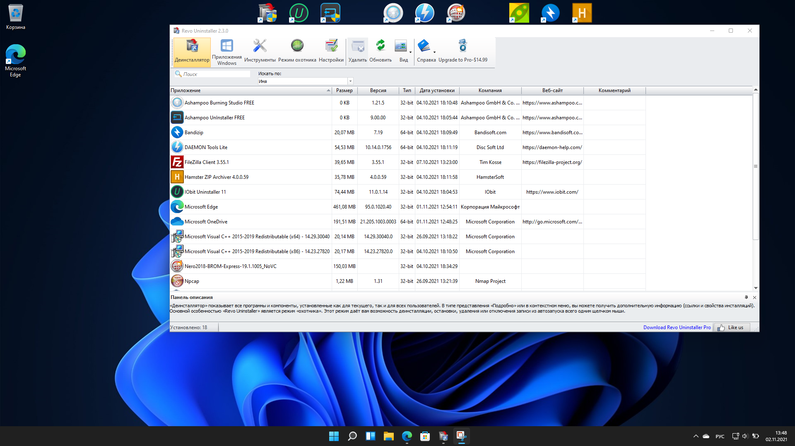
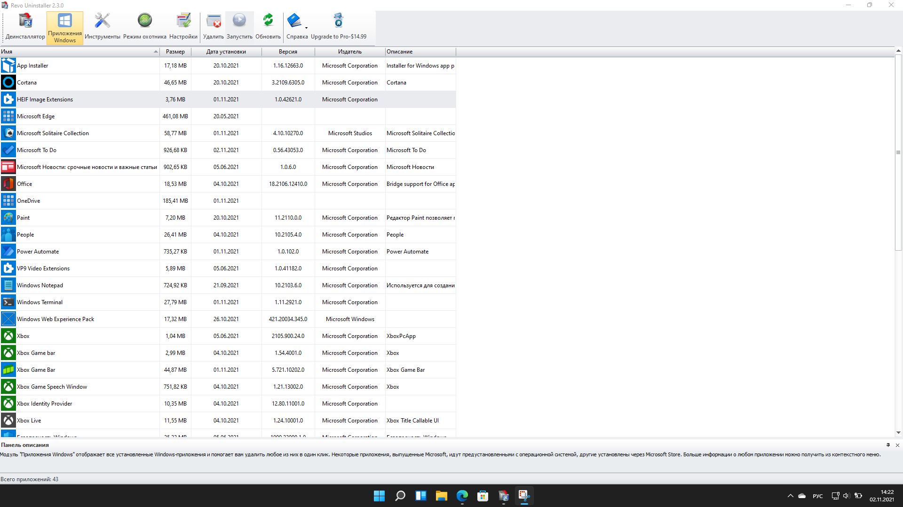
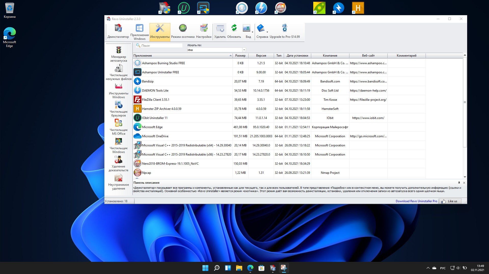
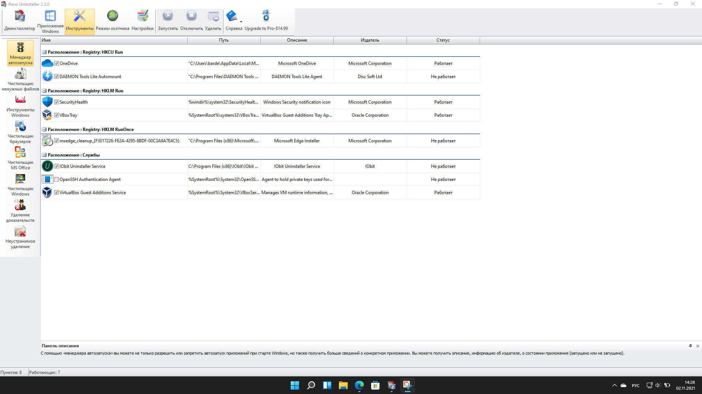
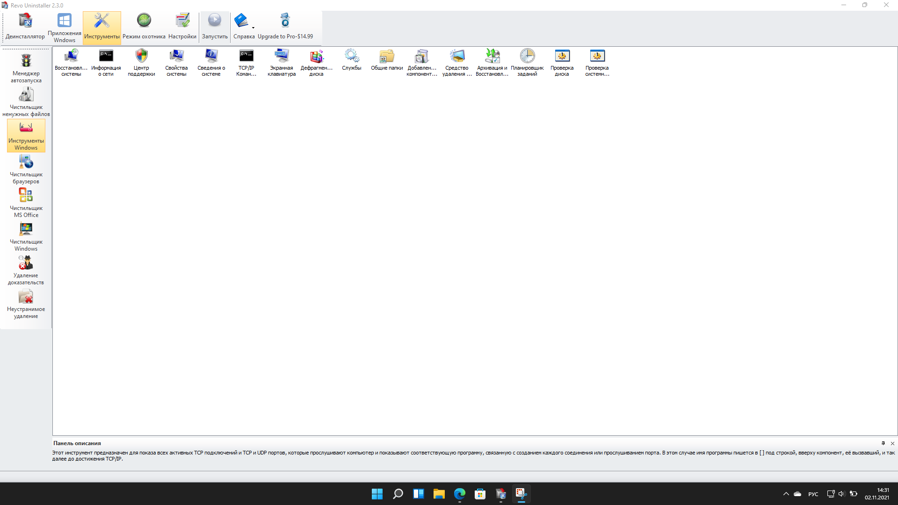
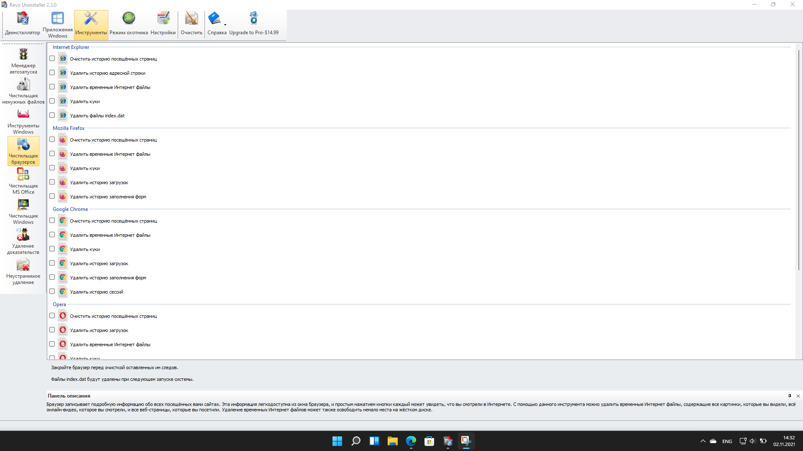

Сайт разработан в рамках дисциплины "Web-технологии в информационных системах"
выполнил Шевелев Артем Юрьевич ИЦТМС-4-1

НИУ МГСУ
Москва 2022
Revo Uninstaller - утилита для замены стандартного системного приложения “Установка и удаление программ” операционных систем Windows. Программа имеет три версии: Freeware, Pro и Pro Portable. Последние две вариации платные и отличаются от Freeware расширенным функционалом. Мы рассмотрим Revo Uninstaller на примере бесплатной версии.
Как видно на скриншоте при запуске программы открывается вкладка деинсталлятор. В этой вкладке мы видим таблицу с данными о всех установленных программах. При нажатии правой клавиши мыши по любой из программ, мы можем: удалить программу, открыть расположение установки, выгрузить данные в текстовый формат и выполнить поиск в Google по данной программе.
Во вкладке “Приложения Windows” располагается такая же таблица, только с системными приложениями Windows (Cortana, Paint, Paint и др.).
Следующая вкладка - “Инструменты” (рисунок. Перейдя в нее, пользователь может выбрать один из инструментов во вкладках слева.
Менеджер автозапуска позволяет управлять приложениями, которые автоматически запускаются при загрузке системы. Путем установки “галки” пользователь может добавить приложение в автозапуск или же убрать его.
Инструмент “Чистильщик ненужных файлов” позволяет находить и удалять различные типы ненужных файлов из системы. Во вкладке “Инструменты Windows” пользователь может запустить наиболее важные системные службы.
Чистильщик браузеров - инструмент, позволяющий пользователю удалить историю посещений, куки файлы, историю адресной строки и временные файлы из всех, установленных на ПК, браузеров.
Инструмент “Чистильщик MS Office” позволяют очистить историю открытия документов в таких программах как: Word, Excel, Access, PowerPoint и FrontPage. Чистильщик Windows позволяет очистить следы действий пользователя в системе Windows.
Инструмент “Удаление доказательств” навсегда сотрет физически удаленные файлы с носителя так, что их невозможно будет восстановить. “Неустранимое удаление” несет схожую функцию, только он позволяет самостоятельно удалить файл или папку навсегда без возможности восстановления.
Функционал программы Revo Uninstaller достаточно велик. Даже в бесплатной версии ПО Freeware пользователь имеет возможность очистки от ненужных файлов, более удобный, чем в Windows, интерфейс удаления программ и возможность удаления программ навсегда.
Сайт разработан в рамках дисциплины "Web-технологии в информационных системах"
выполнил Шевелев Артем Юрьевич ИЦТМС-4-1
НИУ МГСУ
Москва 2022